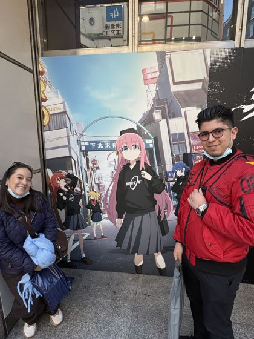

プロジェクト
▶ CREATE
🔍
2026年 11月
‹ ›
日
月
火
水
木
金
土
1
2
3
4
5
6
7
8
9
10
11
12
13
14
15
16
17
18
19
20
21
22
23
24
25
26
27
28
29
30
1
2
3
4
5
日付を選ぶと、その日のゲスト回が下に表示されます
ゲスト回プロジェクト
11月 ・ 10件
ツアーが終わると Immich の素材で自動作成されます
Victor Gonzalez
11/25（水）秋葉原 ・ 写真83 / 動画7 ・ POV型
下見待ち
Jennifer West
11/24（火）秋葉原 ・ 写真80 / 動画8
書き出し済み
Pamela McGrogan
11/22（日）秋葉原 ・ 写真64 / 動画5
書き出し済み

Valeska
11/17（火）秋葉原 ・ 写真71 / 動画4
編集中
Philip
11/12（木）秋葉原 ・ 写真58 / 動画3
未着手
＋ 新規
通常は自動作成
 下見待ち
下見待ち
下見待ち
下見待ち 書き出し済み
書き出し済み 書き出し済み
書き出し済み 未着手
未着手